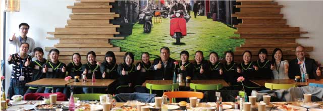
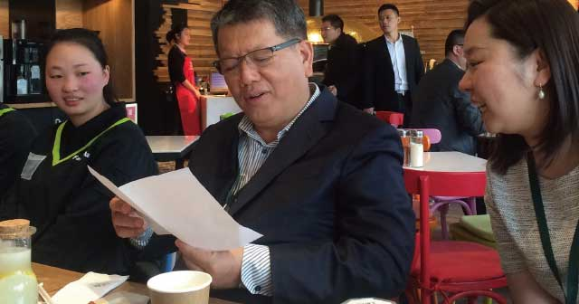
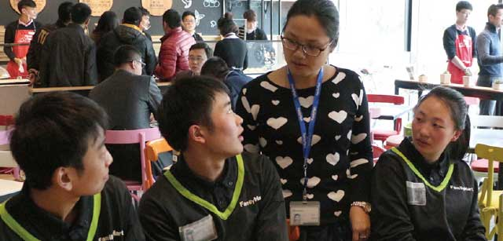

3月9日，那不乐思披萨店里一片阳光明媚，不时传来欢声笑语。原来是我们的董事长魏应行和第一届重庆中职班的孩子们正在一起愉快地共进午餐。
中职班的13位同学中，有9位同学担任店长职位，3位同学担任副店长职位，还有1位同学已经成为担当。其中最小的一位同学才刚刚满19岁，已经成为了店长，管理着比自己还大的哥哥姐姐！大家虽然年纪不大，只有20岁左右，却都已经成长为能够独当一面的大人了。

董事长为大家的成长感到由衷地高兴，也不由感叹岁月如梭，回忆两年前，大家还是稚气未脱的孩子，现在经过在全家便利的磨练，都变得成熟稳重许多。
董事长也嘱咐大家在生活中如果遇到什么困难就告诉他。班长杜志鱼笑着告诉董事长，大家已经克服了刚来时的不适应，现在同学们住的都比较近，彼此能够互相照应。店里面不忙的时候会回家看看家人，或者到苏州、杭州等一些周边城市旅游，还会去游乐场玩。董事长向大家打趣道：“哇！那你们已经比我厉害了，我都没去过耶。”引得大家纷纷笑作一团。

就像董事长说的那样，孩子们来上海是生活的，而不是为了工作。上班好好工作，下班开心玩耍，这才是生活嘛。董事长告诉大家，我们不论出身、学历，只要诚实、正派、认真，就可以在全家闯出自己的一片天地。同学们不仅要向上，还要向善，努力书写属于自己的精彩的人生故事。
自2013年起，顶新公益基金会开始在重庆筹办“顶新中职班”，让来自大山的同学们能够得到我们的支持与关爱，中职班毕业的同学们都有机会留在全家、德克士或者康师傅牛肉面工作，成为顶新大家庭的一份子。重庆中职班目前已办到第四届，获得了同学们和社会各界的支持和认可。公司也会在生活和工作上给孩子们提供更多的支持。